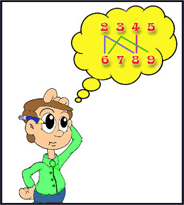

You will be given two sets of integers. Let's call them set A and set B. Set A contains n elements and set B contains m elements. You have to remove k1 elements from set A and k2 elements from set B so that of the remaining values no integer in set B is a multiple of any integer in set A. k1 should be in the range [0, n] and k2 in the range [0, m].
You have to find the value of (k1 + k2) such that (k1 + k2) is as low as possible. P is a multiple of Q if there is some integer K such that P = K * Q.

Suppose set A is {2, 3, 4, 5} and set B is {6, 7, 8, 9}. By removing 2 and 3 from A and 8 from B, we get the sets {4, 5} and {6, 7, 9}. Here none of the integers 6, 7 or 9 is a multiple of 4 or 5.
So for this case the answer is 3 (two from set A and one from set B).
#include <bits/stdc++.h>
using namespace std;
vector<int>graph[1003];
int n,m;
map <int,int> ma;
bool check(int i,bool *seen,int *match)
{
for(int j=0;j<graph[i].size();j++){
if(!seen[graph[i][j]]){
seen[graph[i][j]]=true;
if(match[graph[i][j]]<0||check(match[graph[i][j]],seen,match)){
match[graph[i][j]]=i;
return true;
}
}
}
return false;
}
int bpm()
{
int match[n+3+m];
memset(match,-1,sizeof(match));
int ans=0;
for(int i=0;i<n;i++){
bool seen[n+m+5];
memset(seen,false,sizeof(seen));
if(check(i,seen,match))
ans++;
}
return ans;
}
int main()
{
//freopen("in.txt","r",stdin);
ios_base::sync_with_stdio(false);
int t;
cin>>t;
int cas=1;
while (t--){
for (int i=0;i<1003;i++)
graph[i].clear();
cin>>n;
int a[n];
for (int i=0;i<n;i++) {
cin>>a[i];
}
cin>>m;
int b[m];
for (int i=0;i<m;i++){
cin>>b[i];
for (int j=0;j<n;j++){
if (b[i]%a[j]==0)
graph[j].push_back(n+i);
}
}
/*for (int i=0;i<n;i++){
cout<<a[i]<<" : ";
for (int j=0;j<graph[i].size();j++){
cout<<graph[i][j]<<" ";
}
cout<<endl;
}
cout<<endl<<endl;*/
cout<<"Case "<<cas++<<": "<<bpm()<<endl;
}
return 0;
}
//graph[i].push_back(j);
//cout<<bpm()<<endl;